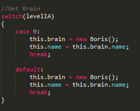
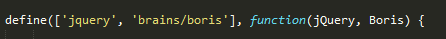
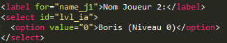

About
Présentation
Ce Jeu a été crée dans le cadre du mini-projet de la matière 4AIT (Artificial Intelligence).
Créateur:
Comment jouer ?
Règles du jeu:
Le jeu se déroule en deux temps : la pose puis le mouvement.
La pose
Tant qu'il en possède encore, chaque joueur place à tour de rôle un pion sur une intersection libre. (9 Pions par joueurs)
Le mouvement
Lorsqu'il n'a plus de pion à poser, chaque joueur fait glisser l'un de ses pions vers une intersection voisine libre en suivant un chemin prévu.
À tout moment du jeu, celui qui réalise un moulin — c'est-à-dire l'alignement de trois de ses pions — peut capturer un pion adverse. Ce pion doit être choisi parmi ceux n'appartenant pas à un moulin, s'il en existe, mais peut être quelconque dans le cas contraire.
Le jeu s'achève quand un joueur n'a plus que deux pions ou ne peut plus jouer, il est alors le perdant.
Sources: Wikipédia
Manipulation
Phase 1: Lorsque c'est à votre tour, cliquez sur un noeud afin de poser votre pion à cette endroit.
Phase 2: Lorsque c'est à votre tour, cliquez sur un pion qui vous appartient (il deviendra rouge), cliquer ensuite sur l'endroit où vous souhaitez le déplacer.
Si vous avez sélectionné un mauvais pion vous pouvez recliquer sur le pion déjà séletionné pour le désélectionner.
Pour les développeurs
J'ai créer mon application de manière à ce que l'intégration d'une nouvelle IA soit
facilement modulable.
Vous trouverez donc ci-dessous les liens permettant de télécharger mon projet (et de créer votre propre IA):
Procédure d'ajout d'IA:
- Créer son propre "Brain" et le mettre dans le dossier "brains". (voir brainTemplate.js)
-
Dans le fichier IA.js: modifier le premier switch dans "initialization" afin d'ajouter le case de votre IA:

Ajouter dans la première ligne (define) votre fichier JS.

- Dans le fichier index.html ajouter à l'élément html permettant de sélectionner le niveau de l'IA votre propre IA:

Pour toute explications, demandes, n'hésitez pas à me contacter par mail:
maxime.tual AT supinfo.com
Ressources graphiques prises sur ce site : "Jeu du moulin en ligne"